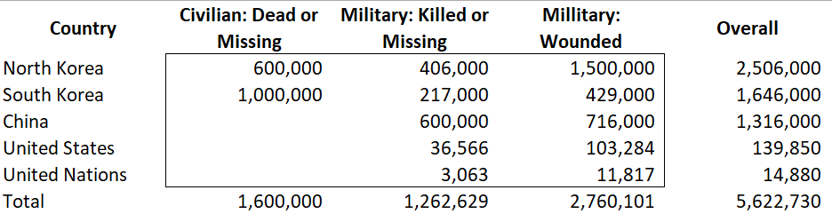
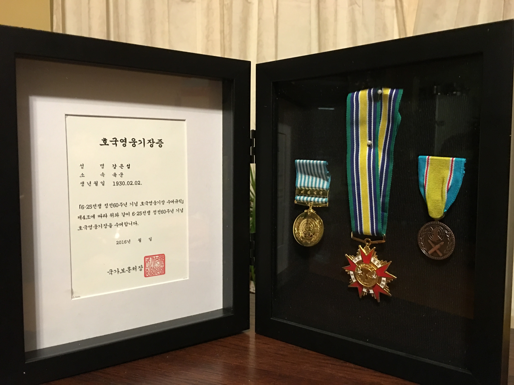

Remembrance of past events is beneficial – even without the benefit of personal witness and its recollection and interpretation.
Without my father’s personal recollection, the Korean War remembrance is unfocused and its significance reduced.
In that post, I pleaded with God for a single, united nation under God. South Korea and North Korea becoming one nation.
That is no longer my wish.
The 70th Anniversary of cessation of hostility in Korea has re-invigorated the idea of Peace Treaty that will replace the Armistice Treaty signed on 27 July 1953.
An internet search of key words Korea Peace Treaty yielded the following.
Pope Francis through Korean emissary, Cardinal Lazzaro You Heung-sik, wished for peace on the Korean Peninsula.1
In this way, I trust that the marking of the armistice will point not only to the cessation of hostilities but to a bright future of reconciliation, fraternity and enduring harmony for the Korean Peninsula, and indeed the wider world,
Reporter Iris Kim writes in NBC News 2
The U.S. has a moral responsibility to finally end the war
World Council of Churches (WCC) stated,
… a formal declaration of the end of the Korean War “could be a powerful circuit-breaker and catalyst for peace.”3
Congresswoman, Young Kim,4 writes an article in Foreign Policy, A Korean Peace Treaty Would Be an Unforced Blunder
The big problem here is that North Korea has consistently failed to abide by previous attempts to make peace on the Korean Peninsula5
While these are timely and necessary reminders, repetition will not result in a breakthrough.
Rather than wishing for a peace or united country, I will ask for a new freedom for people in North Korea and continued protection of freedom for South Koreans.
People of Israel was in bondage for over 100 years. Rabbi Dovid Rosenfeld estimates,
the (Egyptian) slavery lasted somewhere between 86 and 116 years.6
- How much longer do Koreans in Northern Korea must endure their bondage?
Furthermore, after wandering in the wilderness for 40 years nearly all died.
Every Israelite over twenty years of age when they left Egypt under Moses’ leadership was now dead, except for three people: Moses, Joshua, and Caleb (see Numbers 14:38).
My father was 20 years old when the Korean War began.
He and others, both from North and South Korea as well as United Nations Command and China, served their nations and its people.

They all served the cause or ideologies of their countries. For this we thank them.

Within 20 years, those that were old enough to remember the War (older than 10 years of age in 1950) will reach 100 years age.
My generation remembers stories and lessons of the war, but it is fading.
- What would be a benefit of a united nation if no one has common experience and no binding ideology?
God has performed miracles on behalf of people of Korea.
That will continue – in His timeline.
God has led our family out of bondage and harms way a number of times.
We will continue to praise and serve Him.
The re-uniting of families in Korea will occur in manner and in time designated by God.
But if we could ask for a wish or two, like Alma.
- Would it be possible for missionaries to re-enter both North and South Korea and hearts will be re-united with their God and their people
- Would it be unrealistic to ask for a religious gathering in PyongYang on the anniversary of the War or the Armistice Treaty Signing?
The message of truth, the Good News, will enable freedom to return to the Korean Peninsula and remain.
Free people of God will then organize a form of government and establish an economy that will both strengthen and enrich both people and the country.
This is my revised wish.
July 2023
Son of a North Korean Christian Family
Footnotes
https://www.koreaherald.com/view.php?ud=20230727000764#:~:text=%22In%20this%20way%2C%20I%20trust,wider%20world%2C%22%20it%20added.↩︎
https://www.nbcnews.com/news/asian-america/70-years-later-koreans-are-still-working-formally-end-korean-war-rcna96209↩︎
https://www.oikoumene.org/news/wcc-stands-in-hope-with-korean-peninsula-during-conference-marking-70th-anniversary-of-armistice-agreement↩︎
the representative for Calfornia’s 40th Congressional District and chairwoman of the Indo-Pacific Subcommittee of the U.S. House Foreign Affairs Committee↩︎
https://foreignpolicy.com/2023/07/27/north-south-korea-peace-war-treaty-armistice-united-states/↩︎
https://aish.com/duration-of-slavery-in-egypt/↩︎
https://www.britannica.com/event/Korean-War↩︎